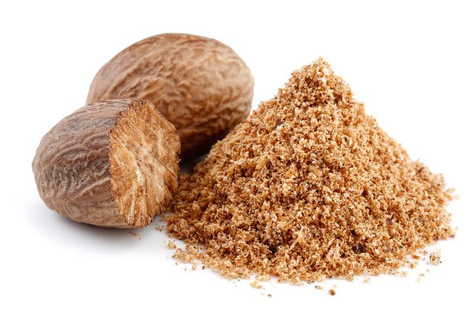
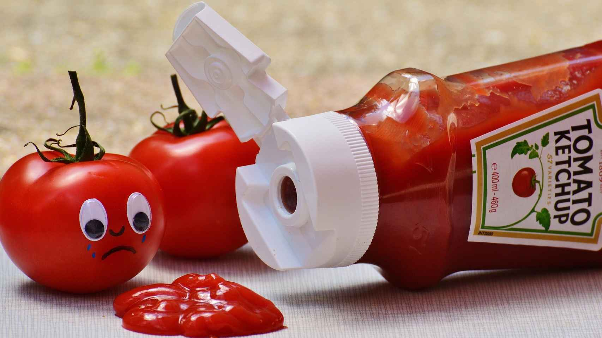
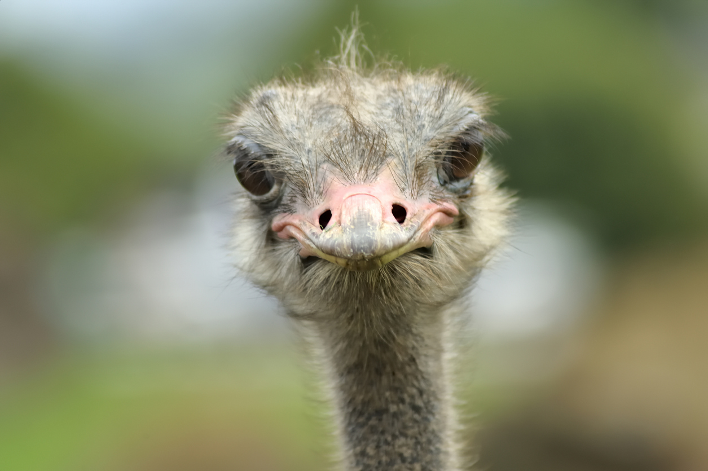

Algunas curiosidades
 La Torre Eiffel puede ser 15 cm más alta durante el verano. Todo tiene una explicación, se debe a la expansión térmica que significa que el hierro se calienta, las partículas ganan energía cinética y ocupan más espacio.
La Torre Eiffel puede ser 15 cm más alta durante el verano. Todo tiene una explicación, se debe a la expansión térmica que significa que el hierro se calienta, las partículas ganan energía cinética y ocupan más espacio.- Los dientes humanos son la única parte del cuerpo que no puede curarse por sí misma. Los dientes están recubiertos de esmalte, que no es un tejido vivo.
- La gente es más creativa en la ducha. Cuando nos duchamos con agua caliente, experimentamos un mayor flujo de dopamina que nos hace más creativos.
-  La nuez moscada es un alucinógeno. La especia contiene miristicina, un compuesto natural que tiene efectos alteradores de la mente si se ingiere en grandes dosis.
-  El ketchup se vendía como medicina. El condimento se recetó y vendió a personas con indigestión en 1834.
-  El ojo de un avestruz es más grande que su cerebro. Esta podría ser la razón por la que las aves a menudo corren en círculos cuando tratan de escapar de los depredadores a pesar de su rápida velocidad de carrera.